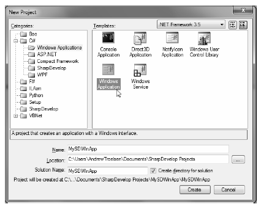
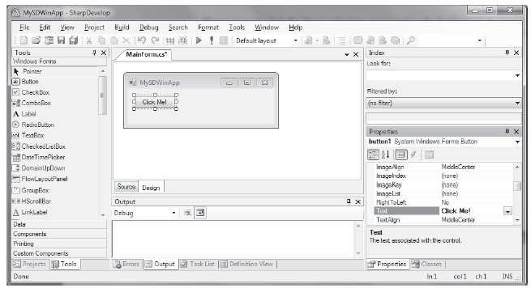
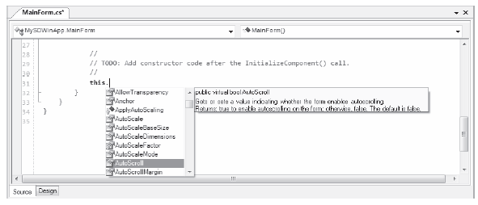

As you may agree, authoring C# code with Notepad++ is a step in the right direction, compared to Notepad and the command prompt. However, these tools do not provide rich IntelliSense capabilities for C# code, designers for building graphical user interfaces, project templates, or database manipulation tools. To address such needs, allow me to introduce the next .NET development option: SharpDevelop (also known as #Develop).
SharpDevelop is an open source and feature-rich IDE that you can utilize to build .NET assemblies using C#, VB, CIL, or a Python-inspired .NET language named Boo. Beyond the fact that this IDE is completely free, it is interesting to note that it was written entirely in C#. In fact, you have the choice to download and compile the *.cs files manually or run a setup.exe program to install SharpDevelop on your development machine. Both distributions can be obtained from http://www.sharpdevelop.com.
SharpDevelop provides numerous productivity enhancements. Here is a hit list of some of the major benefits.
Impressive for a free IDE, is it not? Although this chapter doesn't cover each of these points in detail, let's walk through a few items of interest.
Note At the time of this writing, the current version of SharpDevelop does not support C# 2010 / .NET 4.0 features. Be sure to check the SharpDevelop web site for future releases.
Once you have installed SharpDevelop, the File ? New ? Solution menu option allows you to pick which type of project you wish to generate (and in which .NET language). For example, assume you have created a C# Windows Application solution named MySDWinApp (see Figure 2-5).
Figure 2-5. The SharpDevelop New Project dialog box
Like Visual Studio, you have a Windows Forms GUI designer toolbox (to drag and drop controls onto the designer), and a Properties window to set up the look and feel of each UI item. Figure 2-6 illustrates configuring a button control using the IDE (note that I clicked on the Design tab mounted on the bottom of the opened code file).
Figure 2-6. Graphically designing a Windows Forms Application with SharpDevelop
If you were to click the Source button mounted to the bottom of the form's designer, you would find the expected IntelliSense, code completion, and integrated help features (see Figure 2-7).
Figure 2-7. SharpDevelop supports numerous code-generation utilities
SharpDevelop was designed to mimic much of the same functionality found within Microsoft's .NET IDEs (which we will examine next). Given this point, I won't dive into all of the features of this open source .NET IDE. If you require more information, simply use the provided Help menu.